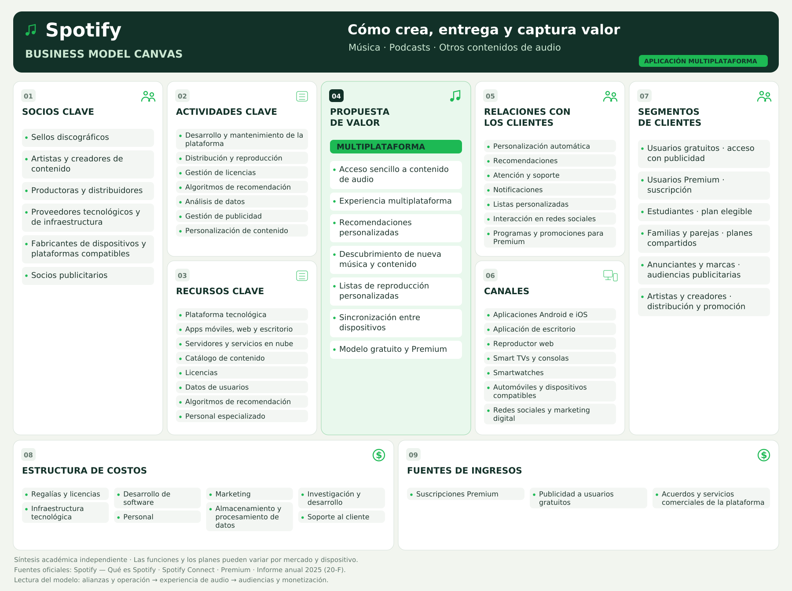

<!doctype html><html lang="es"><meta charset="utf-8"><meta name="viewport" content="width=device-width,initial-scale=1"><title>Spotify · Business Model Canvas</title><style>body{margin:0;background:#f2f5ef;color:#123128;font:16px system-ui}nav,footer{padding:18px 3%;display:flex;gap:20px;align-items:center;flex-wrap:wrap}nav a{background:#123128;color:white;padding:10px 16px;border-radius:8px;text-decoration:none}main{overflow:auto}main img{display:block;width:100%;min-width:1100px}footer{font-size:13px}footer a{color:#146e39}@media print{nav,footer{display:none}main img{min-width:0;width:100%}@page{size:A3 landscape;margin:0}}</style><nav><strong>Spotify · Canvas académico</strong><a href="spotify-business-model-canvas.pdf" download>Descargar PDF</a><a href="spotify-business-model-canvas.png" download>Descargar PNG</a><a href="spotify-business-model-canvas.svg" download>Descargar SVG</a></nav><main></main><footer><strong>Fuentes oficiales:</strong><a href="https://support.spotify.com/uk/article/what-is-spotify/">Qué es Spotify</a><a href="https://connect.spotify.com/">Dispositivos y Spotify Connect</a><a href="https://www.spotify.com/us/premium/">Planes Premium</a><a href="https://s29.q4cdn.com/175625835/files/doc_financials/2025/ar/Spotify-20-F-Filing.pdf">Informe anual 2025</a><span>Elaboración académica: las categorías del Canvas son una síntesis analítica, no un documento oficial de Spotify. Los acuerdos comerciales no se presentan como un segmento financiero independiente.</span></footer></html>